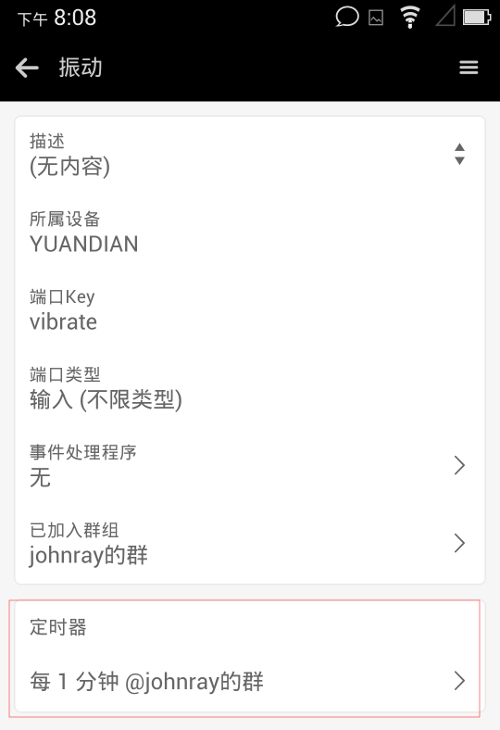

设备即已入网，先来做个最简单的实验 - 定时触发。
课题
nodewox可对随动通道(Actuator)设置定时器。所谓随动，也称执行器，是执行某个具体动作的通道，输入型通道都是随动通道(执行器)。
课题要求：让PaaN设备每隔1分钟振动一次。
提示：振动通道是一个输入型通道，所以可定时触发。
实现
在PC浏览器上操作
首先进入PaaN设备的振动通道信息页面
点击+ 定时按钮，弹出窗口要求设置一些定时器的属性。目前定时器有2种模式:
- 每隔N分钟/小时循环触发
- 固定在每天hh:mm触发
请选择每隔N分钟，并将间隔设置为1，这样就表示每隔1分钟触发一次。因为振动通道不需要数据，所以数据属性不填。
定时器添加成功后的界面
关于删除定时器的方法：在界面中勾上要删除的定时器项，会出现删除选中项的按钮，点击便是。
在移动app上操作
以下介绍在移动端如何操作：
- 在我的设备列表中找到PaaN设备，点击进入设备信息界面
- 点击振动通道，进入通道信息界面
- 在振动通道信息界面，点击添加定时器菜单，进入定时器添加界面
- 填写定时属性，按确定按钮
- 在通道信息界面可看到刚创建的定时器
上图:

验证
检验这个实验很简单，将PaaN设备拿在手中。自添加定时器成功，等1分钟后，设备会振动一下，再隔1分钟，再振动… 直到你将设备下线，或删除定时器。
One more thing… 实验即已成功，别忘记删除你的定时器。
PS. 感言
我曾遇到过一个恶劣的设备，几年前运营商捆绑赠送。其质量极其糟糕，实验中始终不能振动，而换其它机器则是好的。百思不得其解，最后发现它的振动器根本不能用！厂商名号就不公开了。
在硬件世界混，遇机不淑即坑爹又误事。同学们留心～